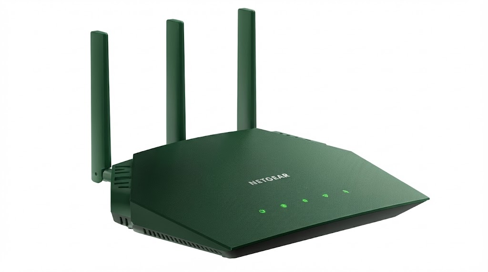
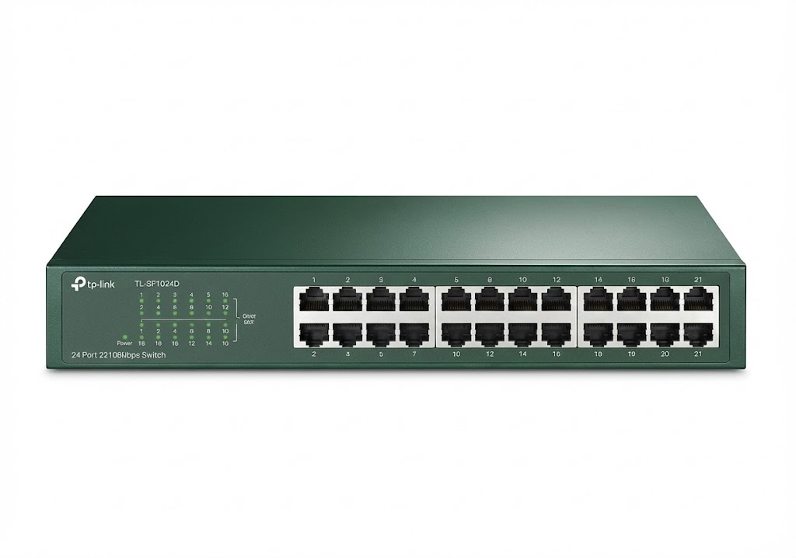
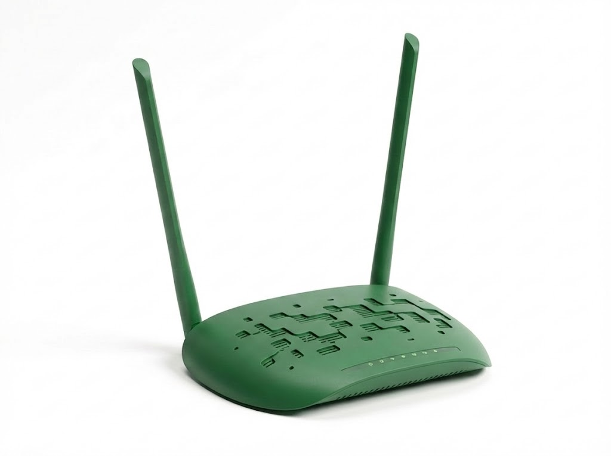

Data Mahasiswa
Nama
:
Rajiel Jibran Ziya Zidna Fann
NIM
:
607012500099
Kelas
:
D3SI-49-04
Prodi
:
D3 Sistem Informasi
Pembahasan Perangkat Jaringan

Router
Perangkat cerdas yang merutekan paket data antar jaringan yang berbeda (misalnya LAN ke Internet).

Switch
Menghubungkan banyak perangkat dalam satu LAN dan mengirimkan data hanya ke port tujuan yang tepat.

Access Point
Menyediakan konektivitas nirkabel sehingga perangkat mobile bisa terhubung ke jaringan kabel (LAN).